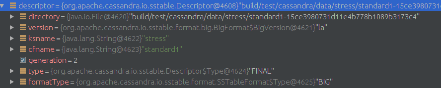
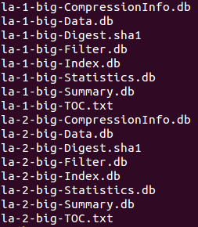
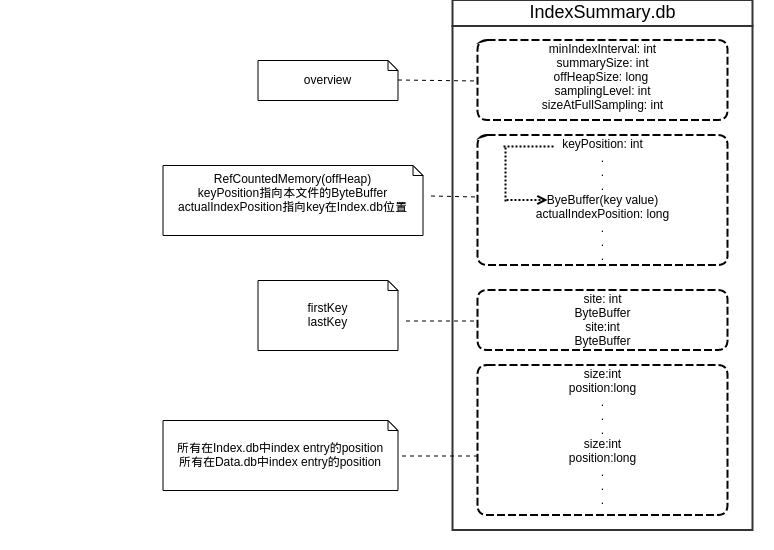
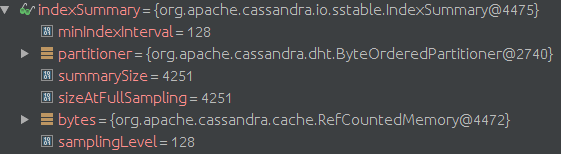

//Memtable类
class Memtable{
MemtableAllocator allocator;
//the write barrier for directing writes to this memtable during a switch
volatile OpOrder.Barrier writeBarrier;
ColumnFamilyStore cfs;
AtomicLong liveDataSize = new AtomicLong(0);
AtomicLong currentOperations = new AtomicLong(0);
// We index the memtable by RowPosition only for the purpose of being able
// to select key range using Token.KeyBound. However put() ensures that we
// actually only store DecoratedKey.
ConcurrentNavigableMap<RowPosition, AtomicBTreeColumns> rows = new ConcurrentSkipListMap<>();
CellNameType initialComparator;
// the last ReplayPosition owned by this Memtable; all ReplayPositions lower are owned by this or an earlier Memtable
AtomicReference<ReplayPosition> lastReplayPosition;
// the "first" ReplayPosition owned by this Memtable;
// this is inaccurate, and only used as a convenience to prevent CLSM flushing wantonly
ReplayPosition minReplayPosition = CommitLog.instance.getContext();
public Memtable(ColumnFamilyStore cfs){
this.cfs = cfs;
this.allocator = MEMORY_POOL.newAllocator();
this.initialComparator = cfs.metadata.comparator;
this.cfs.scheduleFlush();
}
}
/**
* An immutable structure holding the current memtable, the memtables pending
* flush, the sstables for a column family, and the sstables that are active
* in compaction (a subset of the sstables).
*/
public static class View
{
/**
* ordinarily a list of size 1, but when preparing to flush will contain both the memtable we will flush
* and the new replacement memtable, until all outstanding write operations on the old table complete.
* The last item in the list is always the "current" memtable.
*/
private final List<Memtable> liveMemtables;
/**
* contains all memtables that are no longer referenced for writing and are queued for / in the process of being
* flushed. In chronologically ascending order.
*/
private final List<Memtable> flushingMemtables;
public final Set<SSTableReader> compacting;
public final Set<SSTableReader> sstables;
public final SSTableIntervalTree intervalTree;
View(List<Memtable> liveMemtables, List<Memtable> flushingMemtables, Set<SSTableReader> sstables, Set<SSTableReader> compacting, SSTableIntervalTree intervalTree){
this.liveMemtables = liveMemtables;
this.flushingMemtables = flushingMemtables;
this.sstables = sstables;
this.compacting = compacting;
this.intervalTree = intervalTree;
}
｝
//DataTracker构造函数
public DataTracker(ColumnFamilyStore cfstore){
this.cfstore = cfstore;
this.view = new AtomicReference<>();
this.init();
}
void init()
{
view.set(new View(
ImmutableList.of(new Memtable(cfstore)),
ImmutableList.<Memtable>of(),
Collections.<SSTableReader>emptySet(),
Collections.<SSTableReader>emptySet(),
SSTableIntervalTree.empty()));
}
对SSTableReader做validate.
从Directories中得到数据文件，按照Set<Map.Entry<Descriptor, Set<Component>>>存放, 对每个Descriptor对应的Set
Descriptor结构

数据文件类型

private static SSTableReader open(Descriptor descriptor,
Set<Component> components,
CFMetaData metadata,
IPartitioner partitioner,
boolean validate) throws IOException{
//从Statistics.db中读取validation和stats信息
Map<MetadataType, MetadataComponent> sstableMetadata = descriptor.getMetadataSerializer().deserialize(descriptor,
EnumSet.of(MetadataType.VALIDATION, MetadataType.STATS));
ValidationMetadata validationMetadata = (ValidationMetadata) sstableMetadata.get(MetadataType.VALIDATION);
StatsMetadata statsMetadata = (StatsMetadata) sstableMetadata.get(MetadataType.STATS);
// Check if sstable is created using same partitioner.
// Partitioner can be null, which indicates older version of sstable or no stats available.
// In that case, we skip the check.
String partitionerName = partitioner.getClass().getCanonicalName();
if (validationMetadata != null && !partitionerName.equals(validationMetadata.partitioner)){
System.exit(1);
}
SSTableReader sstable = internalOpen(descriptor, components, metadata, partitioner, System.currentTimeMillis(), statsMetadata, OpenReason.NORMAL);
// load index and filter
long start = System.nanoTime();
sstable.load(validationMetadata);
if (validate)
sstable.validate();
return sstable;
}
protected SSTableReader(final Descriptor desc,
Set<Component> components,
CFMetaData metadata,
IPartitioner partitioner,
long maxDataAge,
StatsMetadata sstableMetadata,
OpenReason openReason)
{
this.rowIndexEntrySerializer = descriptor.version.getSSTableFormat().getIndexSerializer(metadata);
deletingTask = new SSTableDeletingTask(this);
readMeter = SystemKeyspace.getSSTableReadMeter(desc.ksname, desc.cfname, desc.generation);
// sync the average read rate to system.sstable_activity every five minutes, starting one minute from now
readMeterSyncFuture = syncExecutor.scheduleAtFixedRate(new Runnable()
{
public void run()
{
if (!isCompacted.get())
{
meterSyncThrottle.acquire();
SystemKeyspace.persistSSTableReadMeter(desc.ksname, desc.cfname, desc.generation, readMeter);
}
}
}, 1, 5, TimeUnit.MINUTES);
把创建的IndexSummary保存到Summary.db
/**
* Loads ifile, dfile and indexSummary, and optionally recreates the bloom filter.
* @param saveSummaryIfCreated for bulk loading purposes, if the summary was absent and needed to be built, you can avoid persisting it to disk by setting this to false
*/
private void load(boolean recreateBloomFilter, boolean saveSummaryIfCreated) throws IOException
{
SegmentedFile.Builder ibuilder = SegmentedFile.getBuilder(DatabaseDescriptor.getIndexAccessMode());
SegmentedFile.Builder dbuilder = compression
? SegmentedFile.getCompressedBuilder()
: SegmentedFile.getBuilder(DatabaseDescriptor.getDiskAccessMode());
boolean summaryLoaded = loadSummary(ibuilder, dbuilder);
if (recreateBloomFilter || !summaryLoaded)
buildSummary(recreateBloomFilter, ibuilder, dbuilder, summaryLoaded, Downsampling.BASE_SAMPLING_LEVEL);
ifile = ibuilder.complete(descriptor.filenameFor(Component.PRIMARY_INDEX));
dfile = dbuilder.complete(descriptor.filenameFor(Component.DATA));
if (saveSummaryIfCreated && (recreateBloomFilter || !summaryLoaded))
// save summary information to disk
saveSummary(ibuilder, dbuilder);
}

Layout of Memory for index summaries:
A sequence of (DecoratedKey, position) pairs, where position is the offset into the actual index file.
RefCountedMemory 将index key 和 index position(指向Index.db的位置)存储在offheap

//Load index summary from Summary.db file if it exists.
//if loaded index summary has different index interval from current value stored in schema,
//then Summary.db file will be deleted and this returns false to rebuild summary.
public boolean loadSummary(SegmentedFile.Builder ibuilder, SegmentedFile.Builder dbuilder){
File summariesFile = new File(descriptor.filenameFor(Component.SUMMARY));
DataInputStream iStream = new DataInputStream(new FileInputStream(summariesFile));
indexSummary = IndexSummary.serializer.deserialize(iStream, partitioner, descriptor.version.hasSamplingLevel(), metadata.getMinIndexInterval(), metadata.getMaxIndexInterval());
first = partitioner.decorateKey(ByteBufferUtil.readWithLength(iStream));
last = partitioner.decorateKey(ByteBufferUtil.readWithLength(iStream));
ibuilder.deserializeBounds(iStream);
dbuilder.deserializeBounds(iStream);
}
//Build index summary(and optionally bloom filter) by reading through Index.db file.
private void buildSummary(boolean recreateBloomFilter, SegmentedFile.Builder ibuilder, SegmentedFile.Builder dbuilder, boolean summaryLoaded, int samplingLevel) throws IOException{
// we read the positions in a BRAF
//so we don't have to worry about an entry spanning a mmap boundary.
RandomAccessReader primaryIndex = RandomAccessReader.open(new File(descriptor.filenameFor(Component.PRIMARY_INDEX)));
try
{
long indexSize = primaryIndex.length();
long histogramCount = sstableMetadata.estimatedRowSize.count();
long estimatedKeys = histogramCount > 0 && !sstableMetadata.estimatedRowSize.isOverflowed()
? histogramCount
: estimateRowsFromIndex(primaryIndex);
if (recreateBloomFilter)
//创建bloom filter
bf = FilterFactory.getFilter(estimatedKeys, metadata.getBloomFilterFpChance(), true);
IndexSummaryBuilder summaryBuilder = null;
if (!summaryLoaded)
summaryBuilder = new IndexSummaryBuilder(estimatedKeys, metadata.getMinIndexInterval(), samplingLevel);
long indexPosition;
RowIndexEntry.IndexSerializer rowIndexSerializer = descriptor.getFormat().getIndexSerializer(metadata);
while ((indexPosition = primaryIndex.getFilePointer()) != indexSize)
{
ByteBuffer key = ByteBufferUtil.readWithShortLength(primaryIndex);
//顺序读取每个RowIndexEntry
RowIndexEntry indexEntry = rowIndexSerializer.deserialize(primaryIndex, descriptor.version);
DecoratedKey decoratedKey = partitioner.decorateKey(key);
if (first == null)
first = decoratedKey;
last = decoratedKey;
if (recreateBloomFilter)
//加入bloom filter
bf.add(decoratedKey.getKey());
// if summary was already read from disk we don't want to re-populate it using primary index
if (!summaryLoaded)
{
//按照minIndexInterval间隔存放index key, 这些key在IndexSummary存放在offheap
summaryBuilder.maybeAddEntry(decoratedKey, indexPosition);
ibuilder.addPotentialBoundary(indexPosition);
//position就是RowIndex指向Data.db的位置, Entry的开始位置
dbuilder.addPotentialBoundary(indexEntry.position);
}
}
if (!summaryLoaded)
indexSummary = summaryBuilder.build(partitioner);
}finally{
FileUtils.closeQuietly(primaryIndex);
}
first = getMinimalKey(first);
last = getMinimalKey(last);
}
//IndexSummaryBuilder中的maybeAddEntry, //TODO startPoints作用
public IndexSummaryBuilder maybeAddEntry(DecoratedKey decoratedKey, long indexPosition)
{
if (keysWritten % minIndexInterval == 0)
{
// see if we should skip this key based on our sampling level
boolean shouldSkip = false;
for (int start : startPoints)
{
if ((indexIntervalMatches - start) % BASE_SAMPLING_LEVEL == 0)
{
shouldSkip = true;
break;
}
}
if (!shouldSkip)
{
keys.add(getMinimalKey(decoratedKey));
//加入offheap
offheapSize += decoratedKey.getKey().remaining();
positions.add(indexPosition);
//加入offheap
offheapSize += TypeSizes.NATIVE.sizeof(indexPosition);
}
indexIntervalMatches++;
}
keysWritten++;
return this;
}